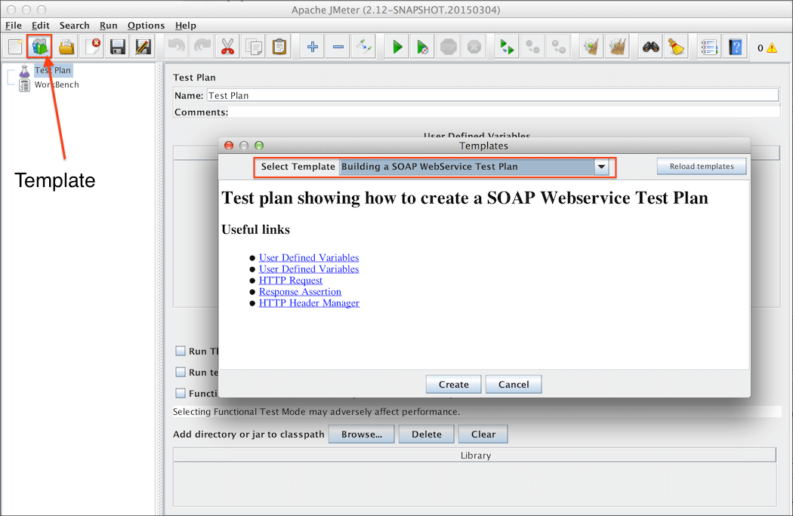
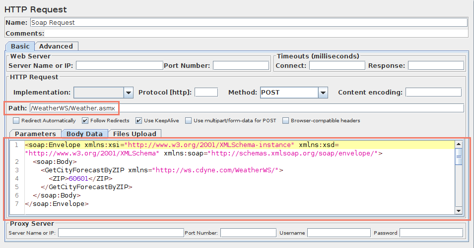

In this section, you will learn how to create a
Test Plan
to test a WebService. You will
>>>>>>> refs/remotes/origin/doc-v2_3_1
create five users that send requests to One page.
Also, you will tell the users to run their tests twice. So, the total number of
requests is (5 users) x (1 requests) x (repeat 2 times) = 10 HTTP requests. To
construct the Test Plan, you will use the following elements:
Thread Group,
HTTP Request, and
Aggregate Graph.
If the sampler appears to be getting an error from the webservice, double check the
SOAP message and make sure the format is correct. In particular, make sure the
xmlns attributes are exactly the same as the WSDL. If the xml namespace is
different, the webservice will likely return an error.
In our Test Plan, we will use a .NET webservice. We won't go into the details of writing a
webservice. If you don't know how to write a webservice, google for
webservice and familiarize yourself with writing webservices for
Java and .NET. It should be noted there is a significant difference
between how .NET and Java implement webservices. The topic is too
broad to cover in the user manual. Please refer to other sources to
get a better idea of the differences.
JMeter sends requests in the order that they appear in the tree.
Start by using menu
File → Templates…
and select template "Building a SOAP Webservice Test Plan".
Then, click "Create" button.

Figure 9.1.0. Webservice Template
Change the following:
In "HTTP Request Defaults" change "Server Name of IP"
In "Soap Request", change "Path:"
Figure 9.1.1 Webservice Path
Next, select "HTTP Header Manager" and update "SOAPAction" header to match your webservice.
Some webservices may not use SOAPAction in this case remove it.
Currently, only .NET uses SOAPAction, so it is normal to have a blank SOAPAction for all other webservices. The list includes JWSDP, Weblogic, Axis, The Mind Electric Glue, and gSoap.
The Thread Group tells
JMeter the number of users you want to simulate, how often the users should send
requests, and the how many requests they should send.
Select the Thread Group element
in the tree, if you have not already selected it. You should now see the Thread
Group Control Panel in the right section of the JMeter window (see Figure 9.2
below)
Start by providing a more descriptive name for our Thread Group. In the name
field, enter JMeter Users.
Next, increase the number of users (called threads) to 10.
In the next field, the Ramp-Up Period, leave the default value of 0
seconds. This property tells JMeter how long to delay between starting each
user. For example, if you enter a Ramp-Up Period of 5 seconds, JMeter will
finish starting all of your users by the end of the 5 seconds. So, if we have
5 users and a 5 second Ramp-Up Period, then the delay between starting users
would be 1 second (5 users / 5 seconds = 1 user per second). If you set the
value to 0, then JMeter will immediately start all of your users.
Finally, clear the checkbox labeled "Forever", and enter a value of 2 in
the Loop Count field. This property tells JMeter how many times to repeat your
test. If you enter a loop count value of 0, then JMeter will run your test only
once. To have JMeter repeatedly run your Test Plan, select the Forever
checkbox.
In most applications, you have to manually accept
changes you make in a Control Panel. However, in JMeter, the Control Panel
automatically accepts your changes as you make them. If you change the
name of an element, the tree will be updated with the new text after you
leave the Control Panel (for example, when selecting another tree element).
See Figure 9.2 for the completed JMeter Users Thread Group.
9.3 Adding a Listener to View Store the Test Results¶
The final element you need to add to your Test Plan is a
Listener. This element is
responsible for storing all of the results of your HTTP requests in a file and presenting
a visual model of the data.
Select the JMeter Users element and add a Aggregate Graph listener
(Add → Listener → Aggregate Graph). Next, you need to specify a directory and filename of the
output file. You can either type it into the filename field, or select the
<<<<<<< HEAD
Browse button and browse to a directory and then enter a filename.

{kind=link}
{kind=link}
{kind=link}
{kind=link}
{kind=link}
{kind=link}